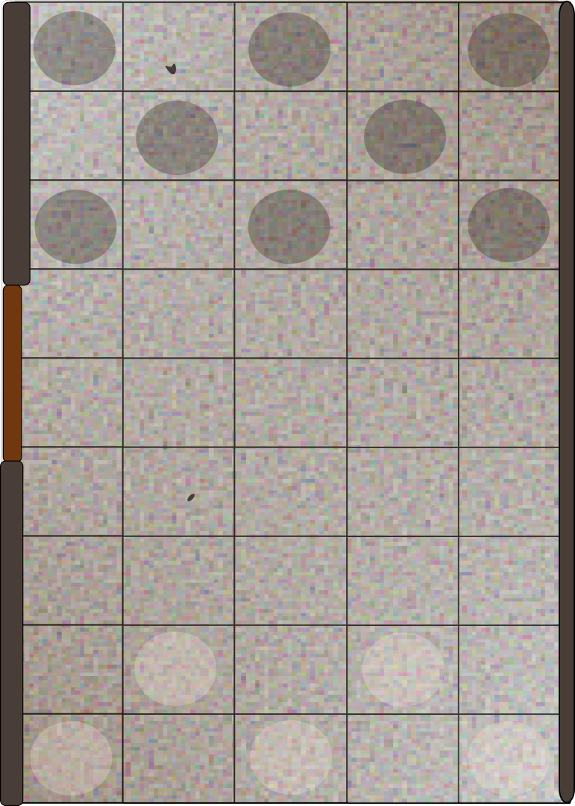

by Eduardo del Corral, bajainnotech@proton.me
This document is a quick supplement for Sanglorian's excellent first level adventure for his 4th Edition Retroclone Orcus RPG. All this does is try to provide some solo play options for the start where it's a bit more open ended. I hope you enjoy it.
Create a party (preferably of 4), I recommend choosing from Sanglorian's premade characters
Read the first page of the PDF as is.
Here's a handy reference depending on the number of characters in your party:
You can use the example of 7 to extrapolate for larger parties (though you should preferably have a party of 4 which is straightforward).
You need to explore the town and obtain 3 clues to complete this section. To get a clue, a player must travel to a location of interest and succeed in the corresponding DC with THEIR stats (even when playing solo you could just send one of the party members at a time). Once the clue has been obtained, landing back to this area triggers an event.
Now throw a d6 and see which area you will be visiting:
If you land on event or a revisited area, roll the events table

Naturally, being ruffians they try to attack from the back in a narrow street but they are not astute enough to catch you unaware. Place enemies in the dark circles and your party members in the clear circles
If you meet a random NPC, roll the random NPC table. Unlike locations, random NPCs can be repeated any number of times.
Once you've left the town, consider the Inn described before. As long as the adventure allows for it, you can come here and recover.
You must establish rapor with the guards and even partake in their pastime, but for that you must earn their trust. Roll a DC 12 diplomacy check to see if you can have a good understanding:
If you succeed: You learn about the challenges and are extended a chance to participate. You accept, and soon you're in the pit.
If you fail: Soldiers ignore you until the match is over, then suddenly you are thrown in the pit and you land face first. You are prone, adversaries gain the first attack.
Mooks are considered incapacitated upon defeat, all other soldiers must be reduced to 0HP. Soldiers will die if their HP goes below minus staggered (half the HP).
If no opponent is killed: You earn the respect of the soldiers, and enjoy watching a few matches with them then read Aftermath
You spot a Centurion who starts running as you prepare to leave, what do wish to do?
You run after him, the Centurion decides to enter a forest. Every party member roll a spot DC 16 check.
If none of the party manage to succeed the spot check, the Centurion runs away. In which case, go to Surprised.
Otherwise, players who succeed spot two hidden exits from the forest. Choose one:
Those who failed the save will chase after the Centurion through - The Forest. The party has a total of 5 complete turns before the Centurion escapes (see the Adventure's diagram).
You find a shortcut that bypases a great section of the forest, but the climb is very steep. To reach the top players must roll either:
Players who succeed can decide to move on to Part 2 or remain here and assist other players providing a +2 to their saves. Alternatively a hero can choose to aid instead of climbing.
Also, players can sacrifice a rope from their inventory to help others on their way up.
After reaching the top, players find a goat. They can either choose to move the goat or assist (provide a +2) another player. To move the goat, players can:
If any player succeeds in either, the goat is scared off then move to the End Space on the next turn.
The Forest itself is confusing, to move forward roll a Nature or Perception check DC: 8. If successful you move forward, if failed you stay put, if critically failed (rolling a 1 or 2) you go back one location. Remember to keep track of the distance from the Centurion, it starts at 3 but will increase if you fail.
You find a path that goes along the river bank and arrive at a tool both with two armed guards...
You must get through those guards, and can choose to either:
Once you successfully passed through the guards, you find the road blocked anyway.
A parade is passing through, it seems endless. You must make your way through, you can either:
After making it through, you see the forest seems denser, you must identify a good reference location to intercept the Centurion. If you can get your bearings you may be able to anticipate the Centurion's direction of travel. To get your bearings you:
If you succeed go to End Space.
You have arrived at the End Space, if you did so in time, then keep reading. Otherwise, go to Alerted.
You have managed to cut off the only means of escape. Read the details of the encounter with the Centurion and face off. You will have to face off against him on your own until reinforcements arrive however (each turn the rest of the party must make their way through to reach your location). Also keep in mind, all fights against soldiers are to subdue - not kill (well on your part, not necessarily on theirs). The adventure depicts the layout of the battle and the direction from which your party will join.
After defeating the Centurion, go to Surprised and consider the information in 1D known.
You have arrived at the Temple entrance, a sorry and eerie site. Depending on whether you were able to intercept the Centurion...
The Centurion awaits with his soldiers at the ready, this will be a rough fight.
You find the guards as expected, you crack your knuckles and get ready to fight.
If you hadn't already, you obtain information from the guards. You can choose to reward yourselves with a nice trip to the town go to Areas Table or continue onward...
That's all for now, the adventure will continue with "Part D - The Temple Entrance" soon... Stay tuned folks!!
This work is licensed under GPL. It references the Orcus RPG Rulebook, which was created and is maintained by Sanglorian and licensed under GPL License. It also references Sanglorian's Pre-Gens (five first-level characters) and First Level adventure - Fires in the Crypt.